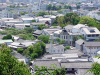

ACHI SHRINE阿智神社
応神朝に朝鮮半島より渡ってきた漢の霊帝の曾孫、阿知使主（あちのおみ）一族は、「石」「鉄」「織」等の先進文化を担う技術集団として吉備国の繁栄の礎を築き、当時島（亀島）であったこの場所へ神々の天降られる斎場として日本最古の蓬來様式（ほうらいようしき）の古代庭園を造ったと伝えられています。
境内には岡山県の天然記念物にも指定されているアケボノフジがあり、「阿智の藤」と呼ばれ親しまれています。
本殿
1620年頃（元和年間）に建てられた本殿は、1869年（明治2年）の神仏分離令まで観龍寺が別当を務めており、このときに現在の阿智神社に改称されました。
拝殿の注連縄
 通常のものより太く三本で作られている注連縄は、毎年11月中旬から御神田で作られた藁を 氏子や崇敬者有志によって作られ、12月13日に奉張されます。
通常のものより太く三本で作られている注連縄は、毎年11月中旬から御神田で作られた藁を 氏子や崇敬者有志によって作られ、12月13日に奉張されます。
絵馬殿
1682年（延宝2年）拝殿新築で境内規模を拡大した際に旧社殿を移築して絵馬殿とされました。一見木造に見える建物ですが、柱に鉄骨が入っています。ここから市内を一望でき、撮影スポットとなっています。
高灯篭
絵馬殿の隣に位置する高灯篭は、かつては倉敷川の中橋辺りにあったとの説もあります。阿智神社が貿易の守護神として船人の信仰を集めていたことから奉納灯として現在の場所へ移設されたといわれています。
天津磐境（あまついわさか）
本殿西側には、鶴組石と亀組石が配置された磐境があります。この天津磐境の他、境内には盤座（いわくら）・磐境（いわさか）が点在しています。神社庭園としては日本最古の遺構とされているこの古代庭園は、日本代表名園に推奨されています。
陰陽石
東参堂右手の新道中腹にある斎館の庭には陰陽があります。一対の石組は一般的に夫婦石とも呼ばれます。女石と呼ばれる陰石と男石とばれる陽石で構成され、道祖神として祀られていました。
石段
阿智神社の東側参道から登る石段にはそれぞれ縁起の良い名前が付けられています。はじめに登る88段には米寿段。61段の還暦段。33段の厄除段。そして随神門の7段、拝殿の5段、荒神社の3段で母なる神の身の内、生命力の根源に達するとされています。
素隠居（すいんきょ）
江戸時代の頃、祭礼に参加できない老夫婦が若者にお面をかぶらせて 参加させたのが始まりで、300年も続く伝統行事。「じじ」「ばば」のお面をかぶった素隠居に渋うちわで頭を叩かれると厄払いになるとされています。春季と秋季の阿智神社例大祭には素隠居が街に繰り出し、たくさんの人々を厄払いします。
鶴形山

美観地区の背景となっている鶴形山は、標高約35mの小高い丘で 公園として整備され、倉敷の街並みが一望出来ます。園内では多種多様な植物や昆虫を見ることができます。
取材協力：阿智神社
公式サイトをみる
一覧に戻る